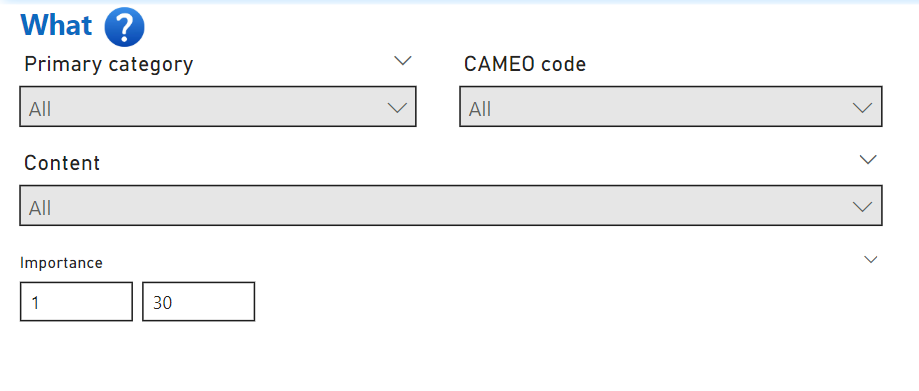

What: Article Categorization and Action Types

The What section in the Trender system helps users filter news articles based on the content of the events they describe. This slicer provides options to narrow down results by the primary category of the article, CAMEO code, importance, and specific content within the article.
Primary Category
1. Overview
The Primary Category allows users to filter articles by the main topic or theme they are related to. Each article is automatically assigned a category based on its content using AI-driven classification. More can be found in the Categories page
How to use:
- Select the desired category from the slicer to filter and view articles that match the chosen category.
Example:
To see all articles related to Health events, choose "Health" from the Primary Category dropdown, and the results will display only health-related news.
CAMEO Code
2. What is CAMEO?
The CAMEO (Conflict and Mediation Event Observations) code provides a more detailed classification of the actions or events described in the news articles. CAMEO codes are often used for tracking international events and conflicts.
Example CAMEO codes include:
- 010: Make Public Statement
- 181: Assault
- 194: Accuse
- 030: Consult
How to use:
- Use the CAMEO Code slicer to filter articles based on the specific action or event type.
- You can input specific CAMEO codes or search for them by name.
Example:
To find articles where a public statement was made, you can filter by CAMEO code 010. This will return articles categorized as such by the system.
Importance
3. Measuring Article Importance
The Importance slicer allows users to filter articles based on how frequently they are discussed or repeated across multiple sources or even multiple times on a single source. This feature helps in identifying high-impact or widely covered stories.
Importance Levels:
- High: Articles that have been repeated or referenced in multiple news outlets.
- Medium: Moderately covered stories.
- Low: Less prominent articles that appear fewer times.
How to use:
- Adjust the Importance slider to show articles based on how much they have been repeated in the dataset.
Example:
To focus on articles with widespread coverage, set the importance filter to "High". This will display only the most discussed news stories.
Content
4. Search by Specific Content
The Content slicer allows you to search for specific text or keywords within the article’s body. This is helpful when you are looking for articles that mention exact phrases, events, or people.
How to use:
- Enter the desired text or keyword into the Content slicer to search for matching articles.
- The system will return articles that contain the exact text or keywords in their body.
Example:
If you want to find all articles that mention the term "climate change", simply enter it in the Content field. The results will show only the articles where this term appears.
Use Cases
Identifying Global Events and Actions
By filtering articles using the CAMEO Code, users can track specific global actions like military operations, peace negotiations, or sanctions. This can be particularly useful for researchers or analysts monitoring international relations.
Analyzing Key Topics in the News
By using the Primary Category filter,